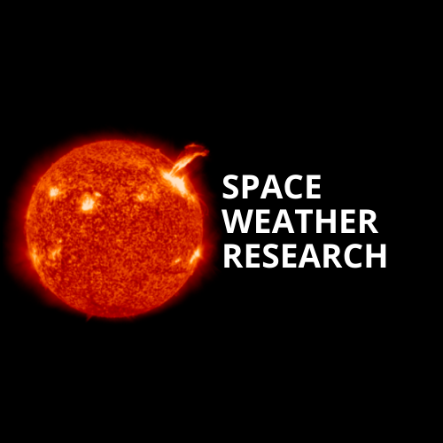

Note: The website is designed for "Solar Physics & Space Weather Research" enthusiasts. This site provides Source Data for research, Upcoming conferences & schools, Video lectures, Software download links, etc., with the intention to get all data at one place.
Data provided by NASA Missions. Explore opportunities via SolarNews, NASA Opportunities, Meetings & Jobs, and India Sci, Tech & Innovation. Definations are available at COSMOS. Conduct literature surveys at ADS, PRL Library, and Google Scholar.
Major sunspot numbers result in coronal holes. HSS is often associated with coronal holes, which can be traced by CHIMERA segmentation on Solar Monitor. The solar wind speed due to coronal holes from poles is approx. 500-800km/sec, while from the nearby equator ranges from 300-400km/sec. The combination of these winds gives compressions of slow-speed winds due to high-speed winds (CIRs), resulting in features like denser regions, larger Ap-index, negative Bz, increase in IMF, moderate geomagnetic storms, and gradual increases in temperature.